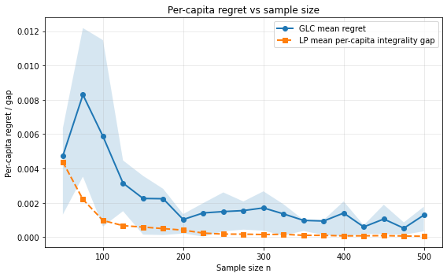

- \(\tau - \lambda^* c + \nu^* \ge 0\)最適方策は予算の影の価格 \(\lambda^*\) と最低カバー率の影の価格 \(\nu^*\) で決まるアフィンしきい値規則になる（Theorem 1）。
- 差は 1 人あたり \(2V_{\max}/n\) 以下LP 緩和と 0-1 問題の最適値の差は \(n\) によらず \(2V_{\max}\) 以下なので、1 人あたりに直すと 0 に近づく。
- 0.152 対 0.001〜0.002LP と RC で割当てが食い違う人の割合。費用がばらつき、最低カバー率が効いたシナリオだけが大きかった（Table 2）。
予算の上限と最低カバー率を同時に課すと、処置の割当ては組合せ最適化の問題になる
論文の例は失業者に職業訓練を割り当てる公的機関である。訓練で得られる効果は人によって違い、費用も、技能の低い人ほど長く手厚い訓練が要るので高くなる。予算には上限があり、全員には提供できない。一方で、公平性や政治的な受け入れやすさ、制度の規定のために、対象者の一定割合以上には届ける必要がある。
\(N\) 人から処置する人を選ぶ方法は \(2^N\) 通りあり、厳密に解くには混合整数線形計画（MILP）が要る。MILP は NP 困難で、人数が多いと実用的でなくなる。予算制約のもとでの処置ルールは Bhattacharya and Dupas（2012）などが母集団の水準で特徴づけているが、論文はこれに最低カバー率を加え、計算できる形で方策を作る段階まで扱う。
最適方策は、予算と最低カバー率の二つの影の価格で決まるアフィンしきい値規則になる
共変量 \(x\) の人の処置効果を CATE \(\tau(x)\)、処置の費用を \(c(x) > 0\)（既知とする）、1 人あたりの予算を \(C = B/N\)、最低カバー率を \(\rho\) とする。方策 \(\pi(x) \in \{0,1\}\) について、次の問題を解く。
無交絡と重なりの仮定、実行可能な方策があること、Slater 条件を置き、方策のクラスがすべての可測な二値ルールを含むとすると、強双対性が成り立つ。最適方策は二つの制約のラグランジュ乗数 \(\lambda^*, \nu^* \ge 0\) を使って次の形に書ける（Theorem 1）。
\(\lambda^*\) は予算を 1 単位緩めたときの価値（費用 1 単位あたりの価格）、\(\nu^*\) は最低カバー率を緩めたときの価値（処置する 1 人あたりの価格）である。最低カバー率が効いていなければ \(\nu^* = 0\) となり、規則は \(\tau(x)/c(x) \ge \lambda^*\)、つまり費用 1 単位あたりの効果で切る費用対効果の基準になる。最低カバー率が効いていると、全員のスコアに同じ \(\nu^* > 0\) が足されて選び方が緩くなり、効果が小さい人や、わずかに負の人まで処置することがある。
費用は既知として扱い、推定した費用への拡張は局外関数を加えれば同様に扱えるとして、この論文では扱っていない。
標本上の問題は人数下限つきの 0-1 ナップザック問題になり、LP 緩和との差は 1 人あたりでは消えていく
標本では \(\tau(X_i)\) を推定値 \(v_i\)（例えば二重頑健な推定値）で置き換える。方策のクラスが標本上のどんな割当ても表せるなら、問題は次の整数計画と同じになる（Theorem 2）。各人が品物、\(v_i\) が価値、費用 \(w_i = c(X_i)\) が重さで、人数の下限がついたナップザック問題である。
\(d_i\) を \([0,1]\) の連続値に緩めた LP 緩和では、全員にかかる制約が予算と人数の二つしかないため、端点解で 0 と 1 の間の値をとる人は高々 2 人である。これに \(|v_i| \le V_{\max}\) と費用の有界性の仮定を合わせると、二つの最適値の差は \(n\) によらず \(2V_{\max}\) 以下になり、1 人あたりの差は次のように 0 に近づく（Lemma 4、Theorem 3）。
このため、実行可能で、LP の最適値との差が \(o(n)\) に収まるしきい値規則は、1 人あたりで見れば 0-1 問題でも漸近的に最適になる（Theorem 4、境界上にちょうど乗る人の確率が 0 という条件のもとで）。
GLC は予算の影の価格を二分探索し、スコア上位で人数を満たしてから予算に収まるだけ人を足していく
GLC（Greedy-Lagrangian with coverage）は、予算の影の価格 \(\lambda\) を決めて各人のスコア \(a_i(\lambda) = v_i - \lambda w_i\) を計算し、次の手順で割当てを作る。まず、費用の安い順に \(K_n\) 人を選んでも予算を超えるなら、問題は実行不能として止める。
- スコアの上位 \(K_n\) 人を必ず処置する（人数の下限を満たす）。この人たちだけで予算を超えたら、\(\lambda\) が小さすぎるので上げる。
- 残りの人をスコア順に見て、スコアが正で予算に収まる人を足していく。
- 予算の使い残しが予算の \(\varepsilon\) 倍を超えたら \(\lambda\) を下げる。これを二分探索で繰り返し、使い残しが \(\varepsilon\) 倍以内に収まったら止める。
人数の下限は「上位 \(K_n\) 人を必ず選ぶ」ことで満たすので、探索するのは \(\lambda\) の 1 次元だけである。1 回の反復はスコアの並べ替えで \(O(n \log n)\)、反復回数は \(O(\log(1/\varepsilon))\) で、全体で \(O(n \log n \cdot \log(1/\varepsilon))\) になる。論文は汎用の内点法で LP を解く場合の最悪計算量を \(O(n^3)\) 程度としている。
費用対効果の順に切る RC は、費用がばらつき、最低カバー率が効くときに最適解からずれる
RC（rank-and-cut）は、各人を比 \(s_i = \hat\tau_i / c_i\) の大きい順に一度だけ並べ、上から \(k\) 人を選ぶ切り方のうち、\(k\) が人数の下限以上で累積費用が予算内のものから、効果の合計が最大のものを選ぶ（Algorithm 2）。並べ替え 1 回の \(O(n \log n)\) で済み、影の価格の調整は要らない。
最適な規則を \(c(x)\) で割ると、費用対効果 \(r(x) = \tau(x)/c(x)\) に対するしきい値規則になる。
最適な下限 \(b_{LP}\) は、\(\nu^* > 0\) のとき費用とともに上がる。RC の下限 \(t^*\) は一定なので、二つは \(c^\times = \nu^*/(\lambda^* - t^*)\) で交わる。費用が \(c^\times\) より低い人では最適な規則のほうが緩く、RC が処置しない人を処置する。費用が \(c^\times\) より高い人では逆に、最適な規則なら処置しない人を RC が処置する。
論文は、\(|\tau| \le K\)、費用の有界性、境界付近の人の割合についてのマージン条件 \(P(|m^*(X)| \le t) \le Ct\) のもとで、RC による厚生の損失が \(K C\cdot\mathbb{E}[c(X)\,|t^* - b_{LP}(X)|]\) 以下になることを示す（Theorem 5）。\(b_{LP}\) が人によって変わるのは \(\nu^*/c(x)\) の項だけなので、費用がほぼ一定か、\(\nu^* \approx 0\)（最低カバー率が効いていない）なら、RC は最適解にほぼ一致する。論文は費用がばらつき \(\nu^*\) が大きい場合に誤った割当てが多くなり、それ以外の 3 通りではほぼ一致するか完全に一致すると整理している。
シミュレーションでは、GLC の 1 人あたり後悔は \(n = 200\) 以上で 0.0010〜0.0017 にとどまった
1 つ目のシミュレーションは、共変量 \(X_i \sim \mathcal{N}(0, I_d)\)、効果 \(\tau_i = X_{i1} + 0.5X_{i2}\)、費用 \(w_i = \exp(2X_{i1})\) とし、費用のばらつきを大きくしてある。真の効果を使って、MILP による厳密解（OPT）、LP 緩和、GLC を比べた。\(n\) は 50 から 500 まで 25 刻み、各 \(n\) で 50 回繰り返している。1 人あたりの予算 \(C\)、最低カバー率 \(\rho\)、次元 \(d\) の値は本文に書かれていない。
このページの数値は arXiv v1（2026 年 5 月 12 日）の本文と表による。2026 年 11 月時点で出版版は確認できなかった。
Table 1 では、OPT と GLC の 1 人あたりの価値は \(n = 50\) で 0.2001 と 0.1954（後悔 0.0047）、\(n = 500\) で 0.2112 と 0.2099（後悔 0.0013）だった。\(n \ge 200\) では後悔が 0.0010〜0.0017 の範囲にある。なお \(n = 100\) の後悔は 0.0059 で、\(n = 50\) より大きい。LP 緩和と OPT の差は \(n = 50\) の 0.0044 から、\(n \ge 250\) では 0.0001〜0.0002 まで縮んだ。LP 解で 0 と 1 の間の値をとる人は、平均 1.0〜1.6 人だった。

LP と RC の割当てが大きく食い違ったのは、費用がばらつき、最低カバー率が効いたシナリオだけだった
2 つ目のシミュレーションは、\(X \sim \mathcal{N}(0,1)\)、効果 \(\tau(X) = (\beta_1 - \beta_0)X + \gamma X^2\)、費用 \(c(X) = c_0 + \delta|X|\) とし、費用のばらつき \(\delta \in \{0, 1\}\) と最低カバー率 \(\rho \in \{0.1, 0.5\}\) を組み合わせた 4 つのシナリオで、LP と RC の割当てが食い違う人の割合を測った。標本の大きさは \(n = 500\) で、100 回の平均をとっている。RC は LP と同じカバー率になるよう調整してある。\(\beta_0, \beta_1, \gamma, c_0\) と予算の値は本文に書かれていない。
食い違いの割合は、費用のばらつきがあり \(\rho = 0.5\) のシナリオ（1）で 0.1520 だった。このとき \(\nu\) の平均は 0.842 で、カバー制約が効いている。残りの 3 つは \(\nu\) の平均が 0.000 で、食い違いは 0.0010〜0.0020 だった。論文は、\(\rho\) が大きいだけでは \(\nu^* > 0\) にならないと注記し、費用が一定で \(\rho = 0.5\) のシナリオ（3）をその例に挙げている。このため、前節の 4 通りのうち「費用が一定で \(\nu^*\) が大きい」場合は、この表では確かめられていない（解説者の注）。
本文ではこの結果を「Table 1」と呼んでいる箇所があるが、表の番号は Table 2 である。
予算は制約として正面から扱い、最低カバー率が効かなければ ROI 順の割当てに戻る
この論文は効果の推定方法を提案しておらず、CATE の推定値 \(v_i\)（二重頑健な推定値などを例に挙げる）を所与として、割当ての段階を扱う。シミュレーションでも真の効果を使っている。費用 \(c(x)\) は人ごとに違うが既知の値で、処置への反応によって変わる費用は扱わない。処置は二値である。
予算は母集団では 1 人あたりの期待費用の上限、標本では費用の合計の上限として、制約に直接入る。そこに処置する人数の下限（最低カバー率）が加わる。
最低カバー率が効いていない（\(\nu^* = 0\)）とき、最適な規則は \(\tau/c \ge \lambda^*\) となり、ROI 順に並べて予算で切る割当て、つまりナップザック問題の連続緩和の解と同じ形になる。RC はこの ROI 順に並べて切る方法にあたる。論文の「LP 緩和で 0 と 1 の間の値をとる人は高々 2 人」という結果は、予算制約だけの連続緩和で 0 と 1 の間の値をとる品物が高々 1 個になるという事実を、制約が 2 本の場合に広げたものと読める（解説者の注）。最低カバー率が効くと、全員のスコアに同じ \(\nu^*\) が足されるので、ROI に直すと費用の安い人ほど \(\nu^*/c\) だけ有利になり、順位は \(\lambda^*\) と \(\nu^*\) に依存する。そのため、事前に一度 ROI 順に並べるだけでは最適解に届かないことがあり、論文は \(\lambda\) を探索する GLC でこれに対処している。
@misc{cerulli2026optimal,
title = {Optimal Policy Learning under Budget and Coverage Constraints},
author = {Cerulli, Giovanni},
year = {2026},
eprint = {2605.12235},
archivePrefix = {arXiv},
primaryClass = {stat.ML},
doi = {10.48550/arXiv.2605.12235}
}